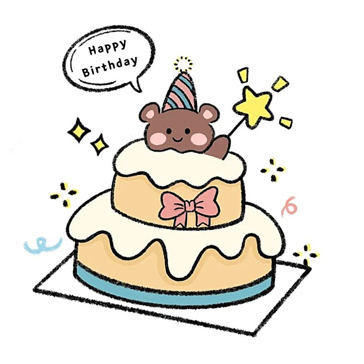

dengarnya sambil buat permohonan yaa..

Semoga kamu diberi kesehatan, umur yang diridhoi, rezeki yang mengalir seperti air di sungai
yang tidak pernah habis serta keselamatan dunia akhirat. Aamiinn...
Mungkin ini belum bisa dikatakan cukup tapi kedepannya akan terus begini di setiap hari
istimewa li kamu. Anjaiii sekarang kamu so dirayakn sayangg jadi setiap kamu berpikir dunia
tida berpihak pa kamu masih ada aku amann wkwk..
Jujur ini first time aku ba beken surprice pa laki-laki karna aku pikir tidak penting, tapi
sekarang aku pikir itu penting karna hubungan yang awet itu ada karna 2 orang yang sama-sama
mengusahakan dengan sama-sama merayakan deng sama-sama saling percaya.
Wkwk lucu ehh macam bukan aku. Semoga hadiah dari aku bermanfaat yaa. Maap yaa hanya bisa
begini, dengan maap juga kemarin pura-pura lupa wkwk..
Jadi begitu saja dulu kalo smo tulis semua somo panjang skli tidak mo abis.. Sekali lagi
happy birthday sayangg..
Sesuai dengan judul lagu ini, I love you 3000 bahkan tak terhingga.
Terima kasih sudah menjadi kamu. Aku cinta kamu!